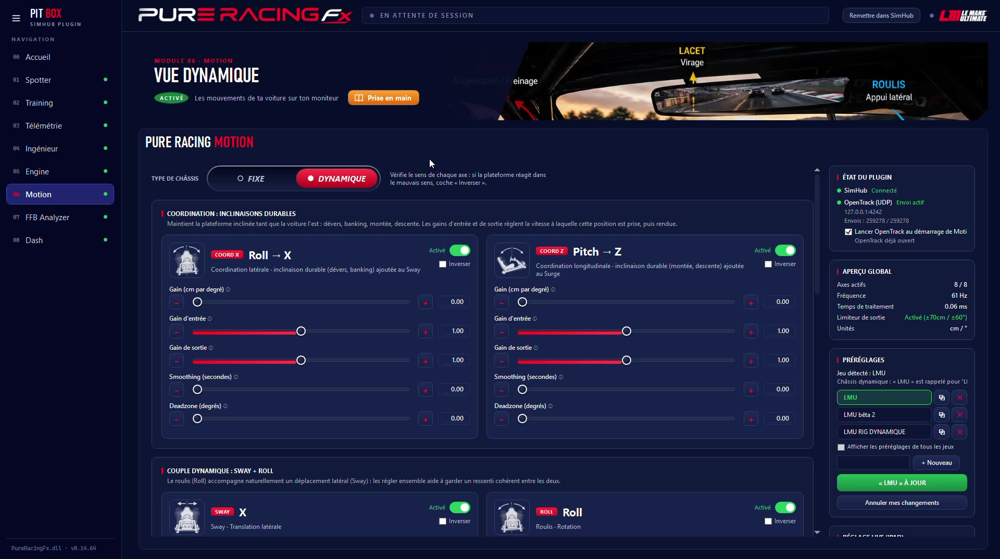
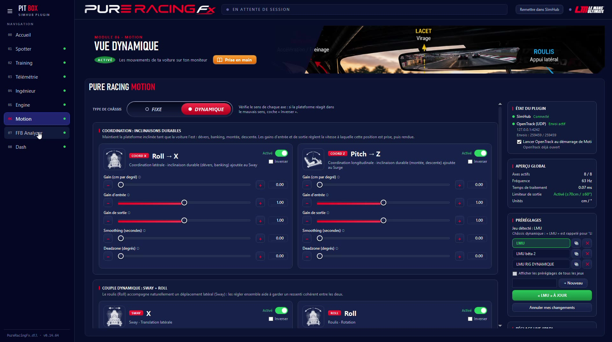

Motion transforme la télémétrie en mouvements sur 6 axes, envoyés à OpenTrack : la vue s'incline dans les virages, plonge au freinage, suit le relief. Sur un châssis dynamique, la plateforme bouge avec la voiture.
Sur un cockpit fixe, Motion anime la caméra du jeu : tu sens les appuis, les freinages et le relief à l'écran, comme un mouvement de tête naturel.

Sur une plateforme à vérins, les tuiles de coordination tiennent l'inclinaison qui dure : le banking de Daytona, un dévers, une montée.

Pit Box démarre OpenTrack ; sa détection des jeux lance le suivi avec le jeu.
Le préréglage chargé est en vert ; le bouton Enregistrer passe au rouge dès qu'un réglage change.
Tous les axes se règlent depuis une tablette, avec une visualisation en direct de ce qui part vers OpenTrack.
| Point | Ce qu'il faut savoir |
|---|---|
| Logiciel | OpenTrack (gratuit), configuré une fois : entrée UDP sur le port 4242, sortie freetrack. La prise en main du module guide pas à pas. |
| Jeux | Ceux qui acceptent un suivi de tête (TrackIR / freetrack) : Le Mans Ultimate, et d'autres. Pas Assetto Corsa, qui a son propre mouvement avec CSP. |
| Sens des axes | Seul Z s'inverse dans OpenTrack ; les autres avec « Inverser » dans Pit Box. |
Ton force feedback mesuré : écrêtage, marge et couple.